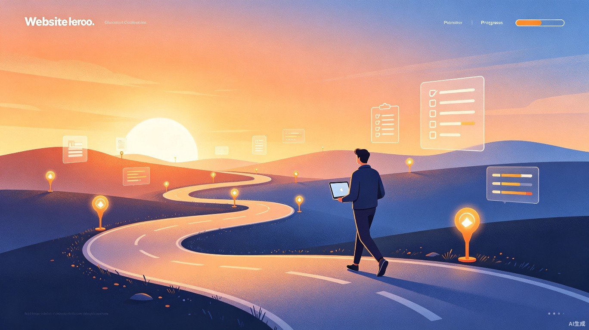

按阶段、有顺序地掌握 Mac 和 AI，每一步都看得见进步

这个路线图将本站内容按难度和依赖关系排列成六个阶段。你不需要一次看完所有内容，按照当前阶段专注学习，完成检查清单后再进入下一阶段。
从零开始，每周一个主题，六周后你的 Mac 和 AI 技能将大幅提升
不想按周学习？根据你的身份直接跳到最适合的章节
从「入门教程」开始，依次阅读「个人指南」「应用推荐」，建立基础认知。
重点看「应用推荐」「AI 日常使用指南」「提示词技巧」，安装效率工具。
跳过配件部分，直接阅读「AI 编程工具」「Cursor 深度使用」，动手写代码。
重点看「集体编程」「AI 编程最佳实践」，建立团队规范和协作流程。
不要纠结于每个细节，先走完一遍路线，再回头精进
每一周的内容都可以在 3-5 个晚上内完成。遇到困难时，善用 AI 工具提问，或者回到相关页面重新阅读。